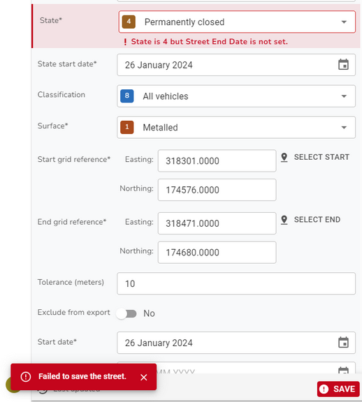
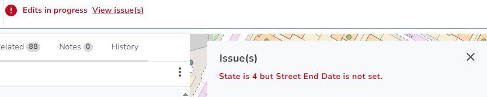

Street error handling |
Top Previous Next |
|
Validation errors may be displayed in several different places depending on the task you are performing. When clicking OK to add a new record, such as an ESU, via the Street form or simply clicking Save after having made changes, then errors may be displayed on the form e.g.  You will also see a link to View issue(s) at the top of the form which, when you click the link will also display any errors. Some errors are only displayed here e.g.  |